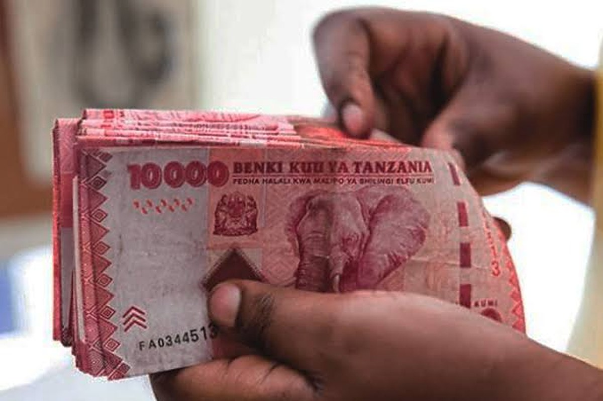

Photograph: Onyango George / EA Hospitality Pulse
Zanzibar's hotels will argue about the 30 per cent. The expensive word in the order is "contract".
On 31 October Zanzibar raised its private sector wage floor by about 30 per cent from 1 January and lifted the dollar floor for foreign workers by half. In the same announcement the Labour Commissioner was told to put every private sector worker on a written contract by December. Over the twelve months to October the islands' advertised room rate fell about 18 per cent.
There was a ceremony in Unguja on the last Saturday of October, and the Minister for Labour, Employment, Youth and Empowerment, Ali Suleiman Ameir, read out a schedule of numbers. The private sector minimum wage would rise from 347,000 shillings a month to 450,000. Small businesses named in the regulations would move from 250,000 to 300,000. A skilled day labourer's floor would go from 30,000 shillings to 35,000, an unskilled one's from 25,000 to 30,000. A domestic worker living in the employer's house would move from 100,000 to 110,000, one living out from 120,000 to 130,000. A foreign worker's floor would rise from a thousand United States dollars a month to fifteen hundred. The rates take effect on 1 January 2027, and employers were given three months to adjust budgets, payroll systems and contracts.
Then the minister said the thing that will cost Zanzibar's hotels more than any figure on that list. He instructed the Commissioner of Labour, Rashid Khamis Othman, to ensure that every private sector worker holds a written employment contract by December, and, as Mwananchi reported it, that he would not tolerate work done without one.
Read the two halves together and the order stops being a wage announcement. The new monthly minimum applies to workers on written contracts. The contract directive decides how many workers that is. On an island where hotel labour has long been organised around season, day rates and subcontracted service, the second instruction is the one that moves the payroll, and it lands seven weeks before the first.
The timing is unkind in a way the figures alone do not show. Zanzibar is having an excellent year on volume and a poor one on price. The Office of the Chief Government Statistician recorded 124,481 international arrivals in August, the highest monthly total in its series, up 18 per cent on the same month in 2025, with estimated bed occupancy at 92.9 per cent on 949,056 visitor nights. Arrivals for January to August reached 633,228, up 10.6 per cent year on year. Average intended stay was 7.6 nights. Europe supplied 58.1 per cent of the August total, Italy alone 14.1 per cent.
Against that, the pricing. Data Appeal Mabrian Travel Intelligence, in analysis released through the Africa Travel and Tourism Association on 19 October, put inbound air capacity up 11 per cent year on year, long haul seats up 26 per cent, and seats over the following six months forecast to rise 33 per cent, with forward global distribution system bookings for travel through March 2027 up 10 per cent. Over the twelve months to October the weighted average room rate advertised through online travel agencies fell about 18 per cent, and it fell in every hotel category. "There's no doubt, Zanzibar's excellent reputation as a destination," said Virginia Messina, the association's chief executive, of the demand picture. The destination is almost full, measurably cheaper, and about to be dearer to staff.
What the wage line actually costs is not the wage. Zanzibar charges a stack of statutory contributions on gross pay, and the floor is the base they multiply. The islands' revenue and payroll position, as compiled on 26 October, puts the Zanzibar Social Security Fund at 7 per cent from the employee and 14 per cent from the employer, the Zanzibar Health Service Fund at 3.5 per cent each way, and the skills development levy at 3 per cent of monthly gross emoluments, reduced from 4 per cent on 1 July this year. Pay as you earn begins above 270,000 shillings a month and runs at 8 per cent to 520,000.
Put the arithmetic on the two floors. At 347,000 shillings, an employer carrying social security, health and the skills levy pays about 418,000 shillings to put that worker on the books, and the worker nets about 304,000 after tax and their own two contributions. At 450,000, the employer's cost is about 542,000 and the net is about 388,000. The employer's cost rises 29.7 per cent, the take home 27.6 per cent, and the gap between what the job costs and what the worker receives widens by roughly 35 per cent. Those figures are division done here on published rates, not a government estimate, and the compilation they rest on flags its own uncertainty: the 14 per cent employer pension rate sits against a 10 per cent figure in the First Schedule of the 2005 Act, and whether private employers must yet enrol in the health fund is not settled. An operator should check both against their own returns before budgeting from them.
The casual rates are where the policy shows its hand. Spread over a twenty six day month, the basis on which the mainland publishes its own hourly and daily equivalents, the new monthly floor of 450,000 works out at about 17,300 shillings a day. The new unskilled casual floor is 30,000 a day, which is 73 per cent more, and the skilled casual floor of 35,000 is about double. A government that wanted employers to keep using day labour would not have set that spread. The December contract deadline and the day rate premium are the same instrument pointing the same way, and a hotel that closes for the long rains in April and May now has to decide whether to carry contracted staff through the shut months or pay a premium of three quarters again for every casual day in high season.
None of this argument is new, which is the most useful thing about it. In July 2017, when the Revolutionary Government proposed lifting the minimum from 145,000 shillings to 300,000, the Zanzibar Association of Tourism Investors put a submission in writing. It supported an increase and said it would comply where economically possible, then objected that a rise of more than 100 per cent was too sudden, and proposed a tourism sector floor of 180,000 with casual day rates of 10,000 unskilled and 15,000 skilled. Its reasoning was a list that any Zanzibar general manager could reconstruct from memory this month: lifting the base pushes every higher tier with it, social security had just been raised without consulting the sector, casual and rural work would be the first thing cut, contractors would pass their own increases through, inflation would turn back up, and room rates could not simply be raised because the destination was already expensive. Nine years later the argument is intact and the base has nearly trebled. The submission bought time, not a sector carve out.
That distinction matters, because a sector carve out is exactly what the mainland has and the islands do not. Government Notice 605A, gazetted on 13 October 2025 and in force since 1 January this year, raised mainland private sector minimums by an average of 33.4 per cent, took the national floor from 275,060 shillings to 358,322, and expanded coverage from thirteen sectors to sixteen and from twenty five sub sectors to forty six. Hotels are one of the sixteen, and their schedule is graded. Five and four star hotels pay a floor of 375,000 shillings a month, three star hotels 225,000, one and two star hotels along with unclassified guesthouses, bars and restaurants 195,000. A tour guide's floor is 320,000, a tourist luggage porter's 225,000, hunting and related activities 200,000. "My office will not hesitate to take action against employers who deliberately refuse to comply," said Ridhiwani Kikwete, the minister of state who announced it.
Look at what that grading does. On the mainland, moving a property from three stars to four raises its statutory wage floor by about two thirds for the same beds and the same guests. A star rating has stopped being a marketing badge and become a payroll input, which is a genuinely odd thing to have built and a genuinely important one to understand before applying for reclassification. Zanzibar's order, as announced, does the opposite and has no hotel schedule at all: one floor for a beach resort, a hardware shop and a transport yard alike. Operators who spent 2017 asking for a tourism rate may find, reading GN 605A, that the version they want already exists forty kilometres away, and that the submission worth making to the Wage Board before January is not for a lower number but for a graded one.
The regional pattern is now unmistakable. Kenya gazetted the Regulation of Wages (General) (Amendment) Order on 26 June as Legal Notice No. 108, giving legal force to the president's Labour Day announcement, lifting general minimum wages 12 per cent and agricultural ones 15 per cent, and backdating the effect to 1 May so that employers owed two months of arrears. A general labourer's floor in Nairobi, Mombasa, Kisumu, Nakuru and Eldoret became 18,047.40 shillings a month. "Employers are hereby advised to review and implement the necessary adjustments," the Federation of Kenya Employers told members in a circular signed by its chief executive, Jacqueline Mugo, "to ensure full compliance with the revised statutory minimum wage requirements effective May 1, 2026." Jaswinder Bedi, who chairs the Kenya Private Sector Alliance, put the employers' counter in one line: "Kenya needs to move to productivity driven salaries and address the 'costs of living' as opposed to 'cost to live'." Three jurisdictions, fourteen months, and a regional labour cost base rewritten by statute rather than by any market any hotel trades in.
Operators elsewhere are fighting a milder version of the same thing. Hotel Management Network, surveying the 2027 margin outlook on 19 October, gathered the evidence: the American Hotel and Lodging Association's survey of 246 United States hoteliers in late February found more than half describing their properties as somewhat or severely understaffed, 70 per cent offering higher wages and 65 per cent naming labour costs as a pressure, while gross operating profit per available room sat at roughly 90 per cent of its 2019 level and CBRE's midyear review found labour costs rising faster than revenue in several major markets, the United Kingdom above all. The mechanism it describes is the one Zanzibar is about to demonstrate in an unusually pure form. Revenue per available room, it noted, "can therefore increase even as profit margins weaken if operating expenses grow faster than revenue."
Zanzibar's 2027 contract rates were agreed with European tour operators months ago, in euros and dollars, against a cost base that is now moving in shillings, with one line of it, the expatriate floor, denominated in dollars and therefore rising in local terms every time the shilling slips. The rate card is closed. Two things are still open. The first is the contract schedule, and the audit worth running before December is not of the wage line but of the headcount: who holds a written contract, who is on a day rate, who sits on a labour contractor's payroll, and what each of them costs fully loaded rather than at face value. The second is the submission, and it has seven weeks to be written. The 2017 letter asked for a smaller number and was refused. The useful request this time is for a schedule.
📣 Telegram 💬 WhatsApp 💼 LinkedIn 📚 All guides